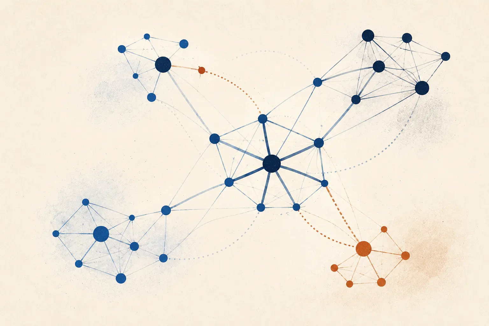

RIFERIMENTO PRINCIPALE
Algorithmic Game Theory
Edited by N. Nisan, T. Roughgarden, É. Tardos, V. V. Vazirani
Cambridge University Press
Corso magistrale
Modulo II

01
Si suggeriscono come riferimenti principali i seguenti volumi.
RIFERIMENTO PRINCIPALE
Edited by N. Nisan, T. Roughgarden, É. Tardos, V. V. Vazirani
Cambridge University Press
APPROFONDIMENTO
Tim Roughgarden
Cambridge University Press
Gli argomenti possono essere reperiti anche su altri testi, a scelta dello studente. I lucidi presentati a lezione definiscono il programma del corso.
02
03
Possiamo incontrarci sia in presenza sia online. Mandatemi una email per prendere appuntamento.